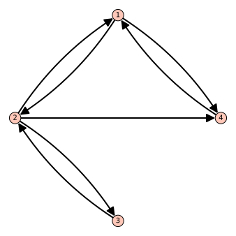
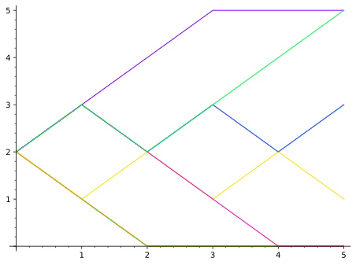
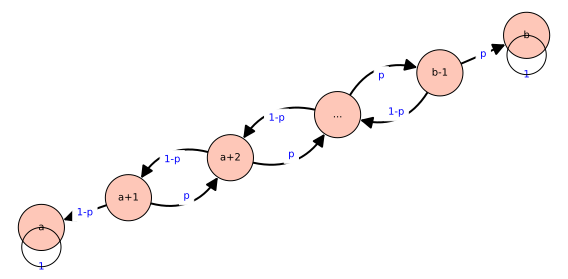
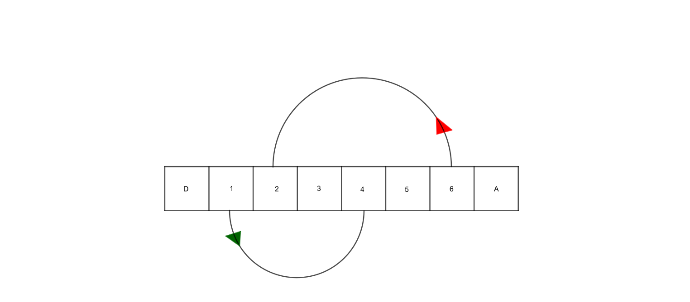

En général, le contenu du chapitre 2 et celui du chapitre 3 devraient suffire pour comprendre cette section. Quelques résultats et notions du chapitre 6 sont utilisés. Il peut être utile de revoir la théorie générale du chapitre 6, mais ce n’est pas absolument nécessaire. Quelques éléments de probabilités et statistiques sont aussi mis à profit.
On suppose que la météo d’une journée peut se manifester selon un seul des trois scénarios suivants: il pleut, c’est nuageux, il fait soleil. De plus, on suppose que le scénario qui sera en vigueur le lendemain ne dépend que du scénario en vigueur aujourd’hui. Ainsi, s’il a plu les cinq derniers jours, seul le fait qu’il pleuve aujourd’hui influence le temps qu’il fera demain. Lorsqu’on applique des probabilités à chaque transition possible entre les différents scénarios, on obtient une chaine de Markov. L’objectif de cette section est de définir cet objet mathématique et d’en découvrir les applications.
Dans cette section, on présente la notion de chaine de Markov, quelques propriétés et plusieurs applications.
Sous-section7.1.1Définition et exemples
Pour parler de chaine de Markov, on doit commencer par restreindre les vecteurs et les matrices avec lesquels on travaille. Un vecteur de probabilité est un vecteur dont toutes les entrées sont supérieures ou égales à zéro et dont la somme est égale à un. Une matrice stochastique est une matrice carrée telle que toutes ses colonnes sont des vecteurs de probabilité. Par exemple, les vecteurs
À noter qu’on dit parfois un vecteur de distribution, ou simplement distribution, pour parler d’un vecteur de probabilité. On dit aussi matrice de transition pour une matrice stochastique, pour des raisons qui deviendront évidentes sous peu.
Définition7.1.1.Chaine de Markov.
Une chaine de Markov est une suite infinie de vecteurs de probabilité \(X_0,X_1,\ldots\) ainsi qu’une matrice \(T\) telle que
Le vecteur \(X_0\) est appelé l’état initial de la chaine de Markov.
Historiquement, les vecteurs de probabilité d’une chaine de Markov sont notés par une lettre majuscule, souvent \(X\text{,}\) sans la flèche au-dessus. Afin de respecter la tradition, on utilise aussi cette notation. Il est également possible qu’un vecteur de probabilité possède une infinité de composantes. Dans ce cas, la matrice serait également infinie. L’étude de ces chaines de Markov est plus complexe, bien que certains résultats peuvent tout de même être obtenus sans trop de difficultés. Dans ce qui suit, on considère seulement les chaines de Markov finies.
On peut penser qu’en vertu de la définition 7.1.1, il faille connaitre toute la chaine des vecteurs de probabilité afin de vérifier si l’on a bel et bien une chaine de Markov, mais en réalité, on obtient souvent une telle chaine à partir de la description d’une situation ou d’un phénomène.
Exemple7.1.2.Une première chaine de Markov.
Dans un pays hypothétique, on retrouve uniquement deux compagnies de téléphone cellulaire. Une étude de marché a démontré qu’un client de la compagnie \(B\) allait, dans \(80\%\) des cas, demeurer avec la même compagnie au moment du renouvèlement. Il allait donc changer de compagnie de téléphonie dans 20% des cas. Dans le cas d’un client de la compagnie \(V\text{,}\) cette même étude a montré qu’il allait lui rester fidèle \(90\%\) du temps, mais qu’il allait changer pour \(B\) dans les autres cas.
L’étude a également établi qu’en date de publication, la compagnie \(B\) accaparait \(55\%\) des parts de marché contre \(45\%\) pour la compagnie \(V\text{.}\)
On montre que l’évolution des parts de marché de ces deux compagnies obéit à une chaine de Markov.
On pose \(X_0=\begin{pmatrix}0.55\\0.45\end{pmatrix}\) et \(T=\begin{pmatrix}0.8& 0.1\\ 0.2& 0.9\end{pmatrix}\text{.}\) Soit \(\vec{v}\text{,}\) un vecteur de probabilité quelconque. On peut interpréter ce vecteur comme les parts de marché des compagnies \(B\) et \(V\text{.}\) Le produit \(T\vec{v}\) représente alors les nouvelles proportions, après une première transition de la population d’une compagnie à l’autre. En effet, si l’on note \(p_B\) les parts de marché de la compagnie \(B\) et \(p_V\) celles de \(V\text{,}\) le produit matrice vecteur \(T\vec{v}=T\begin{pmatrix}p_B\\p_V\end{pmatrix}\) correspond à
Ceci est cohérent avec le modèle de l’énoncé qui dit que \(80\%\) des clients chez \(B\) y restent et que \(10\%\) des clients de \(V\) migrent vers \(B\text{.}\) Un raisonnement semblable démontre le même effet pour la deuxième compagnie.
De cette observation, on déduit que les parts de marché après un an seront de
On identifie la première colonne par le scénario ”pluie“, la deuxième par le scénario ”nuageux“ et la troisième par le scénario ”ensoleillé“. Puisque l’image d’une matrice va des colonnes vers les lignes, l’entrée \(t_{1,2}\) représente la probabilité de passer d’une journée nuageuse à une journée pluvieuse.
Sachant que le temps est ensoleillé aujourd’hui, une famille veut connaitre les chances qu’il y ait de la pluie lors de leur annuel BBQ familial, qui est dans deux jours.
On pose \(X_0=(0,0,1)\text{,}\) puisqu’on est certain, selon les informations de la famille, que le temps est ensoleillé aujourd’hui. La réponse à la question se trouve dans la première composante du vecteur \(X_2\text{.}\) On commence par calculer les probabilités de chacun des scénarios pour le lendemain. On a
La probabilité que la pluie vienne ruiner cette fête est donc légèrement supérieure à \(9\%\text{.}\)
Parfois, il peut être utile de représenter les transitions d’une chaine de Markov par un graphe. On retrouvera dans ce graphe les sommets, qui représentent les états possibles de la chaine, les arêtes, qui relient les sommets pour lesquels la transition de l’un vers l’autre est possible en une étape. Ces arêtes sont parfois dirigées, c’est-à-dire qu’elles ont une flèche indiquant le sens de la transition et elles peuvent être pondérées, pour donner la probabilité de cette transition. Lorsque toutes les transitions ont la même probabilité, on omet généralement les pondérations. L’exemple ci-dessous illustre l’habitat d’une souris domestique, composé de quatre pièces reliées par des portes.
Exemple7.1.4.L’habitat d’une souris domestique.
L’habitat d’une souris domestique est composé de quatre pièces, dont certaines sont reliées par des portes. Le graphe de la figure suivante illustre les parcours possibles pour cette souris.

Figure7.1.5.Graphe représentant les transitions de la chaine de Markov associée au déplacement d’une souris domestique dans son habitat
Lorsqu’elle est dans son habitat, la souris se promène de pièce en pièce en choisissant au hasard, chaque fois, l’une des portes disponibles au hasard. On prend cette souris et on la place au hasard dans l’une des quatre pièces, sans préférence pour une pièce particulière. On se demande où la souris a le moins de chance de se trouver après trois transitions.
À partir du graphe de la figure 7.1.5, on peut créer la matrice de transition associée à la chaine de Markov. On constate, par exemple, qu’à partir de la première pièce, il est possible d’aller dans la deuxième ou dans la quatrième, de façon équiprobable. En raisonnant ainsi pour les trois autres pièces, on arrive à la matrice
On pose ensuite \(X_0=\begin{pmatrix}0.25 \\ 0.25\\ 0.25 \\ 0.25\end{pmatrix}\text{.}\) Pour calculer la pièce qui a le moins de chance d’être occupée par la souris après trois déplacements, on utilise Sage.
Deux pièces ont en fait le moins de chance d’être occupées, les pièces \(3\) et \(4\) avec \(15.625\%\) chacune.
Le prochain exemple est un cas classique en probabilité. Souvent appelé ”la ruine du parieur“. La mention la plus vieille retracée remonte à Blaise Pascal, en 1656, dans une lettre à Pierre de Fermat. Pascal est considéré comme l’un des pionniers de la théorie des probabilités.
Exemple7.1.6.La ruine du parieur.
On considère un parieur qui possède \(2\)$. Il joue au jeu suivant. Il lance une pièce de monnaie. Dans le cas où la pièce tombe sur ” pile“, il gagne un dollar et dans le cas où la pièce tombe sur ”face“, il perd plutôt un dollar. Afin de considérer une chaine de Markov finie, on suppose que le jeu s’arrête lorsqu’il n’a plus d’argent ou bien qu’il réussit à atteindre \(5\)$. La figure suivante illustre le parcours de dix joueurs ayant participé à ce jeu.

Figure7.1.7.La ruine du parieur illustrée
Quelles sont les probabilités qu’il soit encore en train de jouer après cinq lancers de sa pièce?
À tout moment, le joueur peut avoir en sa possession \(0,1,2,3,4\) ou \(5\) dollars. Pour les montants allant de \(1\) à \(4\text{,}\) on peut se déplacer vers chacun des nombres voisins avec probabilité \(0.5\text{.}\) Pour tenir compte de la fin du jeu, on fait en sorte qu’il est impossible de sortir des états représentat les montants \(0\) et \(5\) dollars en donnant comme seule possibilité à partir de ces états le fait de rester en place. La matrice suivante illustre ces transitions
On pose \(X_0=(0,0,1,0,0,0)\) puisque le joueur commence avec \(2\)$. La réponse à la question se trouve dans \(X_5\text{.}\) Il faut faire la somme de toutes les entrées de ce vecteur qui ne sont pas les extrémités. On aura alors la probabilité qu’après cinq lancers, le joueur ait en sa possession \(1,2,3\) ou \(4\) dollars. La cellule suivante définit une fonction Sage qui permettra de créer rapidement la matrice. Il faut l’exécuter, mais rien ne sera affiché. Cette fonction sera étudiée et modifiée à l’exercice 7.1.4.6.
On crée dans la cellule suivante la matrice T et l’on calcule \(X_5\text{.}\)
On remarque qu’après cinq lancers, le joueur peut se retrouver avec \(0,1,3\) ou \(5\) dollars. La probabilité cherchée est \(\frac{5}{32}+\frac{1}{4}=13/32\text{,}\) soit légèrement en-dessous d’une chance sur deux.
L’exemple de la ruine du parieur est un cas particulier d’un modèle plus général appelé la marche aléatoire. On en donne une définition simplifiée ci-dessous.
Définition7.1.8.La marche aléatoire à une dimension.
Soit \(a<b\text{,}\) des entiers. Une marche aléatoire sur \(\{a,a+1,\ldots , b-1,b\}\) est un processus aléatoire où une particule à une position intermédiaire \(\{a+1,\ldots , b-1\}\) se déplace vers la droite avec probabilité \(p\) et vers la gauche avec probabilité \(1-p\text{.}\)
Si la marche est absorbante, alors la particule demeure toujours aux extrémités lorsqu’elle les atteint, et si la marche est réfléchissante, alors la particule retourne toujours vers la bande centrale lorsqu’elle atteint une position extrême. La figure ci-dessous illustre graphiquement une marche aléatoire absorbante.

Figure7.1.9.Une marche aléatoire absorbante sur les entiers \(\{a,a+1,\ldots , b-1,b\}\text{.}\)
On peut même généraliser les marches aléatoires à tous les entiers ou à un sous-ensemble, fini ou non, de ceux-ci.
Le modèle d’Ehrenfest est une application intéressante d’une marche aléatoire. Le phénomène peut servir de modélisation pour la diffusion des particules d’un gaz entre deux milieux.
Exemple7.1.10.Le modèle d’Enrenfest.
On considère deux contenants \(A,B\text{,}\) l’un contenant \(n\) objets identiques et l’autre étant vide. À chaque étape, on choisit l’un des \(n\) objets au hasard et on le change de contenant. On propose d’étudier le cas où l’urne \(A\) possède initialement quatre objets. Quelle peut être la situation après dix transitions?
En considérant uniquement le nombre d’objets dans le premier contenant, on peut voir ce processus comme une marche aléatoire réfléchissante sur \(\{0,1,2,3,4,5\}\) dont les probabilités changent selon l’état actuel. En effet, si tous les objets sont dans un contenant, il est certain qu’à la prochaine transition, l’autre contenant en recevra une. Pour les états intermédiaires, si le contenant \(A\) possède \(m\in \{1,2,3,4\}\) objets, alors il en possèdera \(m-1\) avec probabilité \(m/5\) et \(m+1\) avec probabilité \((5-m)/5\text{.}\) On peut illustrer cela par la matrice de transition
On pose comme vecteur initial \(X_0=(0,0,0,0,0,1)\text{.}\) Avec Sage, on obtient \(X_{10}=(0, 0.30683136, 0, 0.628779008, 0, 0.064389632)\) représentant le portrait après dix transitions.
On termine cette sous-section avec un exemple Sage qui permet de simuler une chaine de Markov.
Calcul7.1.11.Chaine de Markov et Sage.
On va créer une fonction Sage qui prend comme argument une matrice de transition \(T\text{,}\) un vecteur de probabilité \(X_0\) et un entier facultatif \(n\) qui retournera \(X_n\text{.}\) Si l’entier \(n\) n’est pas fourni, on retournera par défaut \(X_1\text{.}\)
On peut vérifier les exemples de la sous-section en utilisant la fonction. Par exemple, pour la chaine de Markov de l’exemple 7.1.2, la cellule suivante montre l’évolution des parts de marché pour les dix premières transitions.
Sous-section7.1.2Le comportement limite
Dans la sous-section précédente, on a calculé les vecteurs de probabilité pour des valeurs relativement petites de \(n\text{.}\) Dans ce qui suit, on cherche à trouver une manière efficace de calculer \(X_n\text{.}\) On s’intéresse aussi au comportement à long terme de la chaine de Markov, soit au comportement de \(X_n\) lorsque \(n\) tend vers l’infini. La réponse à cette question permet de dire, par exemple, quelles seront les parts de marché auxquelles peuvent s’attendre les compagnies dans l’exemple 7.1.2, ou encore, quelle est la probabilité que le joueur se ruine avant d’atteindre son but dans l’exemple 7.1.6. Pour commencer, une proposition qui ne devrait pas surprendre sur le calcul de \(X_n\text{.}\)
Proposition7.1.12.Calcul de \(X_n\).
Soit \(T\text{,}\) la matrice d’une chaine de Markov et \(X_0\text{,}\) l’état initial. Alors
Un état stable d’une matrice stochastique \(T\) est un vecteur de probabilité \(X\) tel que \(TX=X\text{.}\) Dans le chapitre 6, on étudie ces vecteurs, appelés vecteurs propres. Toutefois, on peut trouver ces vecteurs en n’utilisant que les notions des premiers chapitres.
Exemple7.1.13.L’état stable des compagnies téléphoniques.
On reprend la chaine de Markov de l’exemple 7.1.2. On cherche à déterminer s’il existe un état stable.
On pose \(X=(x,1-x)\text{,}\) pour \(x\geq 0\text{.}\) Le vecteur \(X\) est un vecteur de probabilité. En effectuant le produit \(TX=X\text{,}\) on obtient un système d’équation à deux équations et une seule inconnue. On a
qui sont, en fait, à un multiple près, la même équation. La solution est \(x=1/3\text{.}\) L’état stable de cette chaine de Markov existe et est \(\left(\frac{1}{3},\frac{2}{3}\right)\text{.}\)
Il est intéressant de noter que, sous certaines conditions, toute chaine de Markov va converger vers l’état stable. La proposition suivante donne un critère garantissant l’existence et la convergence vers l’état stable. Elle ne sera pas démontrée, puisqu’elle découle davantage d’un cours de probabilités avancé que de l’algèbre linéaire.
Proposition7.1.14.L’état stable et la convergence de la chaine de Markov.
Soit \(T\text{,}\) une matrice stochastique finie telle que toutes les entrées de \(T^k\) sont strictement plus grandes que zéro pour un certain \(k\text{.}\) Alors, \(T\) possède un unique état stable \(X\text{.}\) De plus, pour tout vecteur de probabilité \(X_0\text{,}\) on a
Également, les puissances de la matrice \(T\) convergent vers une matrice dont toutes les colonnes correspondent au vecteur de l’état stable.
Avec Sage, on peut vérifier numériquement la convergence vers l’état stable dans la situation des compagnies téléphoniques, puisque dès le départ, la matrice ne contient aucune valeur nulle.
En commençant par une distribution différente, on converge toujours vers l’état stable. Même dans le cas où l’une des compagnies commence en ayant toutes les parts de marché.
La convergence est plus lente, comme le montre la différence après \(10\) transitions, mais à \(100\) transitions et à la précision utilisée, on ne peut voir de différence.
Comme la matrice de l’exemple sur le modèle météorologique ne contient pas de zéros, on peut aussi trouver son état stable.
Exemple7.1.15.
On cherche l’état stable de la matrice \(T\) de l’exemple 7.1.15. On peut procéder en résolvant un système d’équations linéaires, comme on l’a fait à l’exemple 7.1.13, mais puisqu’on sait que l’état stable existe et que toute distribution va converger vers celui-ci, on peut procéder numériquement en calculant une grande valeur de \(X_n\text{.}\)
On procède par un calcul numérique, qu’on validera ensuite avec une démarche théorique.
On tente maintenant de trouver cette solution par une démarche algébrique. On pose \(X=\begin{pmatrix} x\\ y \\ 1-x-y \end{pmatrix}\) pour \(0\leq x,y\leq 1\text{.}\) On a
Ce système possède une solution unique, que l’on calcule à l’aide de Sage.
Dans le cas de l’habitat de la souris, il faut se rendre à la cinquième puissance avant de trouver une matrice qui ne contient pas de zéros. La proposition 7.1.14 garantit alors qu’un état stable existe. Celui-ci sera déterminé à l’exercice 7.1.4.4. Pour ce qui est de la ruine du joueur, la proposition 7.1.14 ne s’applique pas. Les puissances de la matrice de transition ont toujours des valeurs nulles. On ne peut quitter la position correspondant à zéro ou cinq dollars, la première et la dernière colonne possèdent toujours des zéros. Toutefois, cela ne signifie pas qu’un état stable est impossible.
Exemple7.1.16.État stable pour la ruine de joueur.
On cherche à savoir si un état stable existe pour la matrice de l’exemple 7.1.6. En fait, on peut déjà apercevoir qu’il y aura plus d’un état stable. Le vecteur \((1,0,0,0,0,0)\) est stable , puisque celui-ci redonne la première colonne de la matrice qui est aussi ce vecteur. De même, le vecteur \((0,0,0,0,0,1)\) fait la même chose avec la dernière colonne. En poursuivant la réflexion, on pourra déduire que tout vecteur de la forme \((x,0,0,0,0,0,1-x)\) sera un état sable. Pour savoir si la chaine de Markov, pour un état initial donné, converge vers un état stable, on se tourne vers le calcul d’une grande puissance.
On recopie dans la cellule ci-dessous le code nécessaire pour fabriquer la matrice.
Avec le vecteur \(X_0=(0,0,1,0,0,0)\text{,}\) on obtient, en calculant une grande puissance de la chaine, que l’état stable est environ \(X=(0.6,0,0,0,0,0.4)\text{.}\) Ceci signifie que le joueur de l’exemple 7.1.6 a environ \(60\%\) de chance de perdre tout son argent, contre \(40\%\) de chance d’atteindre son objectif. Certains et certaines auront peut-être réalisé que l’état stable dépend forcément de l’état initial, contrairement aux autres exemples. Si l’on considère un joueur dont la mise initiale n’est que d’un dollar, dans \(50\%\) des cas, le joueur se retrouve déjà ruiné et dans les autres cas, il se retrouve avec deux dollars. On sait alors qu’il possède, à partir de deux dollars, \(60\%\) des chances de se ruiner. Les règles de probabilités établissent donc les chances de se ruiner à partir d’un montant initial égal à un dollar à
Ce calcul est un exemple de ce que l’on appelle les probabilités conditionnelles en théorie des probabilités. On vérifie le tout numériquement. La cellule ci-dessous donne l’état stable pour les chaines de Markov commençant à deux dollars et à un dollar.
On note que chacun de ces états stables est de la forme \((x,0,0,0,0,0,1-x)\text{.}\)
Sous-section7.1.3Un peu plus loin
Dans cette courte sous-section, on donne quelques éléments concernant les chaines de Markov permettant à la lectire et au lecteur intéressés d’en apprendre un peu plus.
Les calculs des grandes puissances d’une matrice ainsi que de l’état stable d’une chaine de Markov peuvent être grandement facilités par l’utilisation des valeurs et vecteurs propres, étudiés au chapitre 6. En effet, on peut montrer que \(1\) est toujours une valeur propre pour une matrice stochastique et, par définition d’un vecteur propre, que les vecteurs propres représentent les états stables de la chaine.
L’existence d’un état stable n’est pas garantie. Une autre condition que celle donnée à la proposition 7.1.14 est que les autres valeurs propres soient, en valeur absolue, inférieures à \(1\text{.}\) C’est un critère algébrique. Du côté de la théorie des probabilités, on veut être en mesure d’atteindre n’importe quel état à partir de tous les autres en un nombre fini de transitions, on veut que la chaine ne contienne pas de cycle, c’est-à-dire que tous les états peuvent être visités à tout moment, et non seulement aux transitions paires par exemple. De plus, on veut que la chaine soit récurrente positive, c’est-à-dire que l’on peut retourner à un l’état initial en un nombre fini de transitions.
Les chaines de Markov infinies sont également intéressantes. Une étude davantage axée sur les probabilités que sur l’algèbre linéaire arrive à montrer qu’il existe des résultats semblables à ceux obtenus dans cette section, bien que leurs conditions d’application puissent être différentes. Un exemple intéressant, qui a d’abord été abordé par Francis Galton, étudie les probabilités qu’une lignée s’éteigne. Étant donnée une personne, on cherche à savoir si sa descendance sera perpétuelle. Pour cela, on suppose qu’à chaque génération, les héritiers ont un nombre aléatoire \(N\) d’enfants qui pourront poursuivre la lignée. Galton a montré que si le nombre d’enfants moyen est inférieur ou égal à un, l’extinction de la lignée est certaine et que, dans le cas où la moyenne est supérieure à un, il a quantifié la probabilité de perpétuité de la lignée en fonction de cette moyenne.
Dans la section 6.3, on présente ce qui est sans doute la plus connue des chaines de Markov: celle qui est à l’origine du moteur de recherche Google!
Les chaines de Markov sont un exemple de ce qu’on appelle plus généralement les processus stochastiques, ou processus aléatoires. Le plus important de ceux-ci est sans aucun doute le mouvement brownien.
Les points importants de cette section sont:
Les notions de vecteurs de probabilité et de matrice stochastique ou de transition;
Si un objet est placé au sommet \(\) du graphe et se déplace selon les règles, quel est l’endroit le plus probable où il peut se retrouver après deux transitions?
On peut donc voir que la position la plus probable après deux transitions est la position \(1\text{.}\)
(c)
L’objet est oublié et continue ses déplacements pendant un bon moment. Une personne finit par l’apercevoir et note la position de l’objet. Quelles sont les probabilités qu’à ce moment, l’objet se trouve sur le sommet \(3\text{?}\)
Sans connaitre l’état initial et le nombre de transitions effectuées jusqu’à maintenant, on ne peut répondre de manière exacte à cette question. Dans ce cas, la probabilité associée à l’état stable fournit la meilleure estimation. On pose \(X=(x,y,z,1-(x+y+z))\text{,}\) le vecteur stable recherché. Ainsi,
On conclut que la position \(3\) est fréquentée \(25\%\) du temps à l’état stable. C’est la meilleure estimation à donner pour la probabilité cherchée.
3.
On s’intéresse aux chaines de Markov à deux états dont la matrice de transition est
Un calcul montre que \(T^2\) n’a pas d’entrée égale à zéro, il est donc possible de calculer une grande puissance de \(T\) pour trouver l’état stable. Avec Sage, on trouve \(X=(0.266666666791633, 0.399999999875033, 0.200000000077234, 0.133333333256100)\text{.}\)
5.
On considère la figure 7.1.18 qui représente l’habitat d’une souris.
Figure7.1.18.Un habitat de souris.
(a)
Quelle est la matrice de transition associée à la chaine de Markov représentant cette situation?
Déterminer la pièce ayant la plus grande probabilité d’abriter la souris à long terme. Est-ce que cela parait logique? Utiliser Sage pour faire les calculs.
C’est la pièce \(4\) qui a le plus de chances d’abriter la souris à long terme. Cela semble plausible étant donné que c’est la pièce qui a le plus de portes. La souris devrait donc y transiter plus souvent.
6.
On reprend la situation du parieur de l’exemple 7.1.6. Tout casino qui se respecte n’offre pas des probabilités équitables dans ses jeux de hasard. Pour simplifier, on considère toujours un joueur qui joue à un jeu qui ne possède que deux résultats possibles. Avec probabilité \(p\text{,}\) le joueur gagne \(1\) dollar et avec probabilité \(1-p\text{,}\) il perd \(1\) dollar.
(a)
Déterminer les probabilités de chaque état après cinq tours si \(p=0.4\text{.}\) Comparer avec les résultats obtenus à l’exemple 7.1.6.
La cellule suivante construit la matrice de transition associée à cette chaine de Markov.
On calcule ensuite \(X_5\) avec Sage.
On constate que, dans cette situation, le joueur a maintenant plus de \(50\%\) de chance d’être ruiné après cinq jeux, contrairement à \(37.5\%\) dans le jeu avec probabilité de succès égale à \(1/2\text{.}\)
Tout comme à l’exemple 7.1.16, il faut approximer \(X\) par \(X_n\) pour une grande valeur de \(n\text{,}\) puisque l’état stable dépend de l’état initial. Avec Sage, on trouve que le joueur a maintenant moins de \(19\%\) de chance d’atteindre les cinq dollars avant de se ruiner, comparativement à \(40\%\) dans la situation équiprobable. Un changement dans la probabilité de gagner à chaque tour de \(10\%\) entraine un changement dans la probabilité de succès net de plus du double.
7.
Lors de l’envoi d’information par un système informatique, cette information est encodée dans une chaine binaire, formée de \(0\) ou de \(1\text{.}\) Il arrive parfois, que lors du transfert, la chaine se corrompe. (Heureusement, il existe des techniques pour valider une chaine et déterminer si elle a été corrompue.) Chaque nombre dans une chaine est appelé un bit. On suppose qu’à chaque transfert, un bit a probabilité \(p\) de rester le même et probabilité \(1-p\) d’être changé. Les bits sont indépendants, c’est-à-dire que le fait que l’un change ou non n’affecte pas les autres.
On considère des chaines à deux bits d’information. Les possibilités sont \(00, 01,10\) et \(11\text{.}\) On suppose \(p=0.99\text{.}\)
(a)
Puisque l’état de la chaine binaire après un transfert ne dépend que de son état avant transfert, c’est une chaine de Markov. Écrire la matrice de transition associée à la chaine.
Pour toute chaine, la probabilité de demeurer inchangé est obtenue par \(p^2=0.9801\text{.}\) La probabilité que le premier bit change, mais pas le deuxième est \((1-p)p=0.0099\text{,}\) tout comme la probabilité que le premier soit inchangé, mais que le deuxième le soit, puisque \(p(1-p)=(1-p)p=0.0099\text{.}\) Finalement, la probabilité que les deux bits soient changés est \((1-p)(1-p)=0.0001\text{.}\) La matrice de transition est donc
On transmet \(10\) comme information. Cette chaine passe de l’ordinateur d’un utilisateur à un réseau central, elle est ensuite envoyée aux serveurs d’une compagnie et se retrouve finalement sur l’ordinateur d’une autre utilisateur, d’une autre utilisatrice. La chaine a donc subi trois transferts. Quelle est la probabilité que le message soit toujours \(10\) lors de la lecture par le deuxième utilisateur? (On note que le message pourrait avoir été corrompu en chemin, mais s’être corrigé de lui-même.)
On pose \(X_0=(0,0,1,0)\text{,}\) l’état initial. On cherche la troisième composante de \(X_3\text{.}\) Avec Sage, on trouve que cette probabilité est d’environ \(0.94\text{,}\) soit \(94\%\text{.}\)
(c)
Calculer \(T^{100}\text{,}\) comme on l’a souvent fait afin de déterminer l’état stable. Est-ce que le résultat contredit la proposition 7.1.14?
Il semble ici que l’état stable ne soit pas le même pour chacune des colonnes. Toutefois, cela ne contredit pas la proposition 7.1.14. Celle-ci dit que les puissances de la matrice convergent vers l’état stable. Cette convergence peut, par contre, être plus lente dans certains cas. Une puissance plus élevée permet de voir que la matrice converge bel et bien vers un état stable.
8.
Au tennis, le système de points est tel qu’un joueur doit faire quatre points pour gagner un jeu. Toutefois, il doit y avoir un écart de deux points entre les joueurs. Une situation particulière se produit lorsque le pointage est \(40\)–\(40\) (ce qui correspond à trois points pour chacun des joueurs). On entre alors dans un état appelé “égalité” (aussi appelé “deuce” en anglais). Le prochain joueur à faire un point est alors considéré en “avantage”. S’il gagne le prochain point, il remporte le jeu et s’il le perd, on retourne à l’égalité. On peut modéliser la partie “égalité” d’un jeu de tennis par une chaine de Markov à cinq états. On note \(E\) pour égalité, \(A_s\) pour avantage serveur, \(A_r\) pour avantage retourneur, \(S\) pour la victoire du serveur et \(R\) pour la victoire du retourneur. Chez les professionnels, le serveur est presque toujours considéré comme favori pour remporter le point. On suppose, que pour chaque point, le serveur a probabilité \(p\) de remporter l’échange.
(a)
Écrire la matrice de transition modélisant un jeu à partir de l’égalité.
Si un serveur a une probabilité de succès de \(p=0.55\text{,}\) quelle est la probabilité qu’à partir de l’égalité, le jeu ne soit pas terminé après \(5\) échanges?
Il faut trouver l’état stable à partir de l’état égalité. Comme la matrice possède toujours des entrées nulles, il faut procéder par le calcul d’une grande valeur de la chaine de Markov. On peut voir que le serveur a environ \(60\%\) de chance de remporter le jeu.
Exercices Sage.
Les exercices qui suivent sont conçus pour être résolus avec Sage. Des cellules vides sont disponibles pour écrire les réponses. Évidemment, il y a plusieurs manières d’arriver aux réponses.
9.
Il est possible d’analyser certains jeux de société grâce aux chaines de Markov, particulièrement les jeux où peu de décisions sont prises par les joueurs. Les jeux pour enfants, comme serpents et échelles ou Trouble, se prêtent bien à cette analyse.
On propose d’étudier le jeu serpents et échelles en regardant dans un premier temps une version simplifiée.
On considère une partie de serpents et échelles se déroulant sur le plateau présenté à la figure suivante.

Figure7.1.19.Une version simplifiée de serpents et échelles.
Dans ce jeu, il y a huit cases. D’abord, on va créer un vecteur de déplacement à huit composantes qui correspondent, pour une position \(i\text{,}\) à la case sur laquelle on se retrouve lorsqu’on atterrit sur la case \(i\text{.}\) Pour les besoins de la cause, on associe la case départ à la position \(0\) et la case d’arrivée à la position \(7\text{.}\)
Étant donné la petite taille de ce plateau, le jeu se déroule avec une pièce de monnaie. Lorsqu’elle tombe sur pile, le joueur avance d’une case et, lorsqu’elle tombe sur face, le joueur avance de deux cases.
Créer une fonction tour qui, étant donné une position de départ et le vecteur de déplacement, retourne la nouvelle position du joueur après le lancer d’une pièce. On rappelle que la fonction choice peut être utilisée pour simuler du hasard.
def tour(d,p): #fonction qui simule un tour de jeu, selon le vecteur de déplacement d et la position de départ p
t=choice([1,2])
if p==7:
return 7
else:
return d[p+t]
Bloc de code7.1.20.Le code de la solution.
(c)
Créer une fonction serpech, qui simule une partie de serpents et échelle sur ce plateau. La fonction prend comme argument le vecteur de déplacement et retourne le parcours du joueur.
def serpech(d):
p=[0]
while p[-1]!=d[-1]:
p.append(tour(d,p[-1]))
return p
Bloc de code7.1.21.Le code de la solution.
(d)
Approximer le nombre de coups nécessaires pour atteindre l’arrivée en simulant \(1000\) parties. La commande pour calculer la moyenne d’une liste est numpy.mean.
d=vector([0,4,2,3,4,5,2,7])
M=[]
for i in range(1000):
M.append(len(serpech(d))-1)
M21=[m for m in M if m>20]
(len(M21)/1000).n()
Bloc de code7.1.23.Le code de la solution.
(f)
Créer une fonction transition_serpech qui, pour une liste de déplacements et un entier \(n\text{,}\) retourne la matrice de transition d’une chaine de Markov du jeu où il est possible d’avancer de \(1,2,\ldots , n\) cases chaque tour.
def transition_serpech(d,n): #Retourne la matrice de transition selon un vecteur de déplacement d et un dé à n faces
cols=[]
for case in range(len(d)): #On crée les colonnes de la matrice
col=vector(QQ,[0 for i in range(len(d))]) #On initialise la colonne au vecteur nul. À noter qu'on spécifie QQ pour que Sage accepte les rationnels
if case==len(d)-1: #Si l'on est à l'arrivée
col[-1]=1
cols.append(col)
break
valide=0 #On compte combien de lancers de dés sont valides, au sens où ils ne dépassent pas l'arrivée
for poss in range(1,n+1): #On peut avancer de 1,2,...,n
if case+poss<=len(d)-1: #Si le déplacement est valide
valide+=1
for poss in range(1,valide+1): #Pour les déplacements valides
col[d[case+poss]]+=1/valide #On ajoute 1/valide aux chances de se retrouver à cette position. Il est important de l'ajouter et de ne pas remplacer, au cas où, lors d'un même tour, on peut atteindre une case à la fois par un lancer de dé et par un serpent ou une échelle.
cols.append(col) #On ajoute la colonne à la liste des colonnes
T=column_matrix(cols) #La matrice de transition
return T
Bloc de code7.1.24.Le code de la solution.
(g)
Utiliser cette fonction pour créer la matrice de transition du jeu simplifié serpents et échelles.
T=transition_serpech(d,2)
X0=vector([1,0,0,0,0,0,0,0])
X=X0
i=0
while X[-1]==0:
i+=1
X=T*X
print("Le nombre de tours minimal est ",i)
print("Les chances sont ",X[-1])
Bloc de code7.1.25.Le code de la solution.
(i)
À la partie 7.1.4.9.e, on a estimé le nombre de parties qui n’étaient pas terminées après \(20\) tours. Déterminer la véritable valeur de ce nombre à l’aide de la matrice de transition.
On regarde maintenant la véritable version du jeu serpents et échelles. L’original se déroule sur un plateau contenant \(100\) cases et possédant huit échelles et huit serpents. Plusieurs plateaux existent, selon la compagnie qui publie le jeu. Le dictionnaire python ci-dessous donne le début des serpents et des échelles ainsi que leur fin, pour la version accessible à l’auteur au moment de la rédaction.
(i)
Le vecteur de déplacement dans ce jeu est un vecteur à \(100+1\) composantes, le départ étant toujours en position \(0\) et l’arrivée en position \(100\text{.}\) Créer une fonction qui prend comme argument la configuration des serpents et des échelles et qui retourne le vecteur de déplacement.
def deplacement(config):
d=vector(range(101))
for i in config.keys():
d[i]=config[i]
return d
deplacement(config)
Bloc de code7.1.27.Le code de la solution.
(ii)
Modifier la fonction tour de la partie 7.1.4.9.b afin que les déplacements possibles soient compris entre \(1\) et \(6\) plutôt qu’entre \(1\) et \(2\text{.}\) Il pourrait aussi être nécessaire de modifier d’autres parties de la fonction selon la manière dont elle a été construite. Utiliser la fonction serpech pour simuler une partie.
def tour(d,p): #fonction qui simule un tour de jeu, selon le vecteur de déplacement d et la position de départ p
t=choice([1,2,3,4,5,6])
if p==100: #On modifie l'arrivée
return 100
else:
return d[min(100,p+t)] #Une manière de s'assurer de ne pas dépasser 100
def serpech(d):
p=[0]
while p[-1]!=d[-1]:
p.append(tour(d,p[-1]))
return p
def deplacement(config):
d=vector(range(101))
for i in config.keys():
d[i]=config[i]
return d
d=deplacement(config)
serpech(d)
Bloc de code7.1.28.Le code de la solution.
(iii)
Approximer le nombre de coups nécessaires pour atteindre l’arrivée en simulant \(1000\) parties. La commande pour calculer la moyenne d’une liste est numpy.mean.
T=transition_serpech(d,2)
X0=vector([1,0,0,0,0,0,0,0])
X=X0
X=X0
i=0
while X[-1]==0:
i+=1
X=T*X
print("Le nombre de tours minimal est ",i)
print("Les chances sont ",X[-1])
Bloc de code7.1.31.Le code de la solution.
(vii)
À la partie 7.1.4.9.j.iv, on a estimé le nombre de parties qui n’étaient pas terminées après \(20\) tours. Déterminer la véritable valeur de ce nombre à l’aide de la matrice de transition.
Créer une liste contenant les chances que le jeu soit terminé au tour \(n\text{,}\) pour \(n\) allant de \(0\) à \(200\text{.}\) À l’aide des fonctions zip et point, tracer le graphique des probabilités que le jeu soit terminé en fonction du nombre de tours.